7. Trip to Portugal
7. Trip to Portugal
December 2 to 8, 2021
Day 5, North of Lisbon: Mafra, Ericeira and Sintra
December 6, 2021


115. Mafra
115. Mafra
Having already seen the area to the south of Lisbon I would go to see the area to the north. My intention was to see Sintra, but first I would travel a few kilometers to see the Mafra palace. One of the most important royal palaces along with Aduja and Sintra (Pena and the National Palace).
This palace is very similar to the monastery of El Escorial in Spain due to its structure and its complex that includes monastery, palace, library and basilica. Its structure is quite robust and rocky, occupying a wide area and most of its rooms are very large and very high. The interior is quite austere with few exceptions. The church is quite large and is mostly made of granite and marble.
The largest rooms are the hunters' rooms and the royal rooms on the second floor. The most important room is the library that houses 40,000 unique volumes.
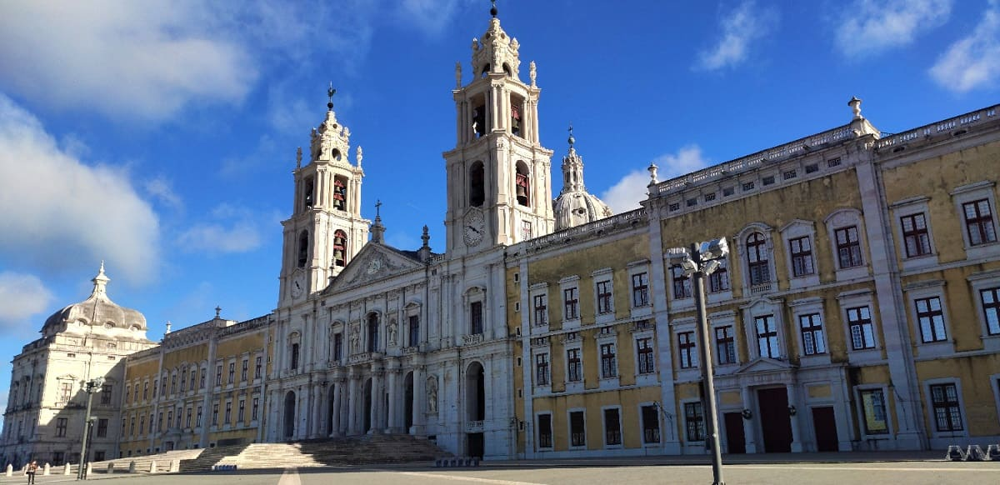
The construction of the palace began in 1717, which in principle was going to be just the monastery, and it was finished in 1730. This was due to the economic strength of Portugal at that time due to the gold coming from Brazil.
Mafra was never permanently occupied by the Portuguese royal family despite the fact that it became a regular stopover and resting place for its members. The magnificent forests of Mafra guaranteed a formidable hunting space for the different Portuguese princes, who were very fond of hunting.
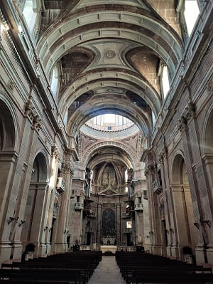
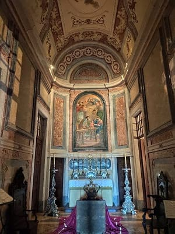
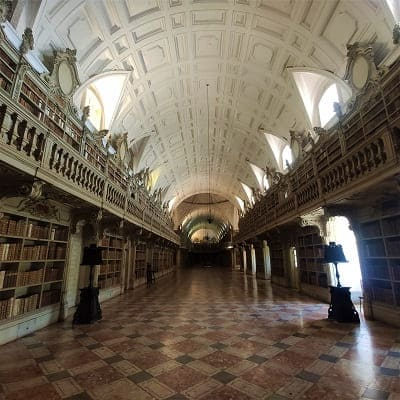

116. Ericeira
116. Ericeira
Then I went to
Ericeira, a coastal town famous for its huge waves and its homogeneous architecture of blue and white houses. Worthy of note is
the church of San Pedro and the large beach where thousands of people surf every year. In between this town visit the Portuguese village, a series of small replicas of a Portuguese town.
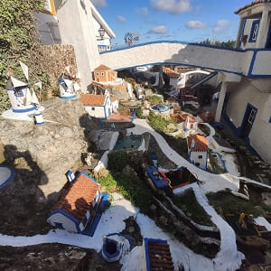
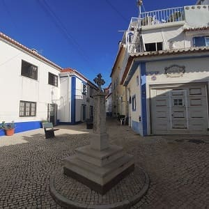
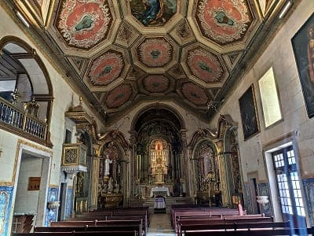
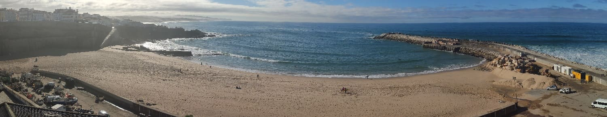


117. Sintra
117. Sintra
Then I would go down to
Sintra at noon eating along the way. I would park next to the station where there is a large car park. Due to the large number of people in this city, which may be the most visited in all of Portugal after Lisbon, it is difficult to park, even though it is huge, and this is taking into account that the dates I went were low season. The town is divided into two parts. On the one hand, the most modern area where the inhabitants of this population are mainly, and then the tourist area around the palaces.
The town is not very big and is overflowing with tourists and shops, but due to the large area in which the different palaces are located, you can walk without difficulty.
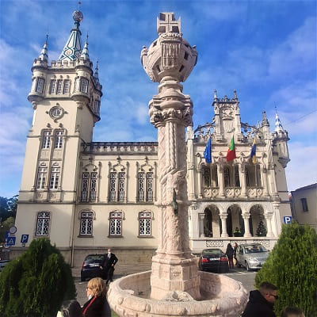
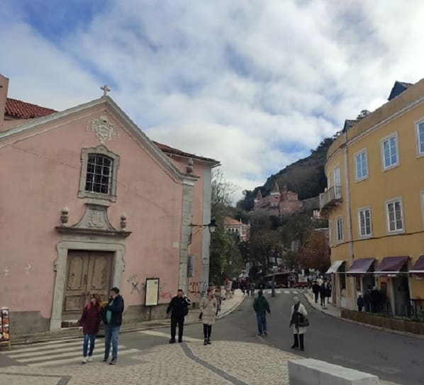
The first thing I visited was the main street and the town hall and from afar you could see a white palace. The national palace. Among the 5 or 6 spaces that can be visited, the Nacional, the Pena, the Regaleira, the Monserrate, the Mouros castle and the Capuchin convent, I decided to go to the National Palace and the Pena Palace.
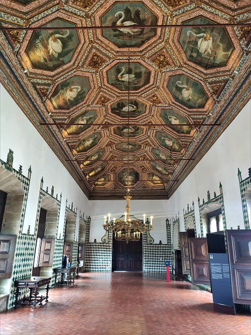
Both palaces would cost me 23 euros to visit, the individual ticket being about 29 euros. Although it seems very expensive, the National Palace is worth paying to enter. The one in La Pena has much less to see but it has unique views. There is an entrance where you can get to the enclosure and not enter the rooms where they ask you for the second entrance, being able to take photos inside the palace but outside the rooms. This ticket is approximately half the price and the truth is that it would have been the best option because it does not have anything of great value inside.
The monuments and palaces in Sintra are the following:
- The castle of Mouros the oldest of all, from the time of the reconquest, and previously belonging to the Arabs who dominated the area.
- The National Palace of Sintra dates back 5 centuries, completed around 1500 and subsequently renovated on several occasions.
- The Capuchin convent would have been built in the 16th century and is the most austere although it has a lot of history.
- Pena Palace is the most famous palace in the complex and is the third most visited monument in Portugal after the Jeronimos Monastery in Lisbon and the Batalha Monastery. It was built as a summer residence after obtaining the land of an old monastery in the area that was destroyed after the Lisbon earthquake of 1755.
- The Regaleira Palace and the Monserrate Palace are private palaces that you can visit both their gardens and their interior and are from the 19th century. li>
- The Royal Palace of Queluz, which was one of the residences of the Portuguese royal family. It is near Sintra in Queluz, and although it began as a summer residence, it would end up being the main residence of the Braganza house, the last Portuguese royal dynasty. At the beginning of the 20th century it would be donated to the state, which would undertake a restoration.
The Sintra National Palace (also known in Portuguese as Palácio da Vila), located in the Sintrense parish of São Martinho, was a royal palace and is now owned by the Portuguese State, which uses it for tourism purposes and cultural. It is an urban palace, whose construction began at the beginning of the 16th century, the author being unknown.
It presents traces of Mudejar, Gothic, Manueline, Renaissance and Historicist architecture. It is considered an example of organic architecture, with a set of apparently separate bodies, but which are part of a whole articulated with each other, through patios, stairs, corridors and galleries. The palace is part of the "Cultural Landscape of Sintra" set, declared a World Heritage Site by Unesco in 1995.
The rooms that stand out the most are
the Swan room and the Pegas room with details of swans and swallows respectively. Also
the room dos archeiros and the room Moura (of the Arabs) And above all the rooms stands out
the room dos Brasoes (room of shields) whose walls are decorated full of tiles and that has a dome that alternates golden details and paintings, containing the coats of arms of 72 noble families of Portugal and shields of each duke or count that existed at that time.

Then I would go to see
the Monserrate Palace, which is one of the most beautiful palaces with ornate details on its walls, which can be seen in the image below along with the image of the Palacio de la Pena that I would visit later.
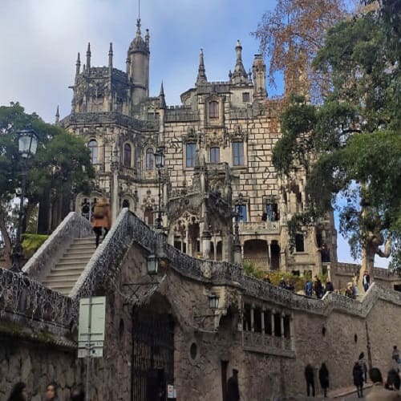
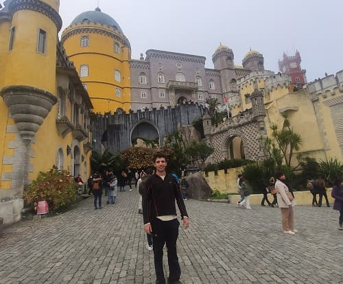
To go up
to the Pena Palace there are a multitude of carriages, in which for 10 euros you could get on. The ascent from the bus is every hour and it is very crowded, so the best option is to walk up. I tried to go up a path through the forest but there was a closed door and I couldn't get through it so I had to go back to the road. Once I reached the entrance, I would have to go up the entire outer park, where I would see a large lake and some defensive towers. The palace is undoubtedly beautiful, but inside there were no large rooms like the Aduja palace, which is undoubtedly the best palace in Portugal.
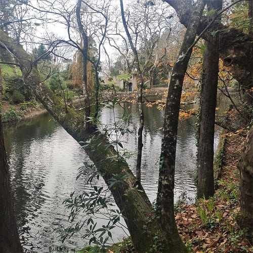
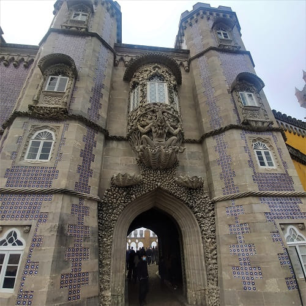
This palace, perched on large rocks, presents a totally intentional mix of architectural styles. You can find elements that belong to neo-Gothic, neo-Manueline, neo-Islamic, neo-Renaissance and to a lesser extent to colonial architecture. The reason for this is that the romantic mind of the 19th century is enormously fascinated by everything exotic.
Structurally, the Pena Palace is divided into four main areas:
- The foundations and outer walls (which will serve to consolidate the implementation of the construction), with two doors, one of which has a drawbridge.
- The building corresponding to the convent, fully restored. It is located at the highest point of the hill and has been surrounded by battlements and endowed with the Clock Tower.
- The courtyard of the arches in front of the chapel, with its walls of Moorish arches. Seen in the picture
- The palatial area itself with its large cylindrical bastion, its interior decorated in cathedral style, according to the fashion of the time. The furniture and ornamentation present inside give a great example of this.
The palace has a multitude of objects from the royal family, in some cases brought from other palaces. In the image the dining room of the palace. In addition you can see all the rooms and chambers of the royal family.
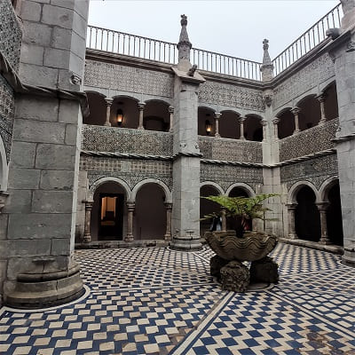
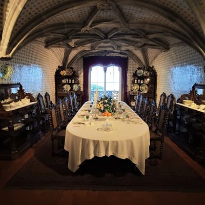
The day was sunny when the afternoon came, the fog came and I could not have great views since the low clouds were at the height of the palace and no more than 1 meter could be seen.
In the following image the inner courtyard and the walls.
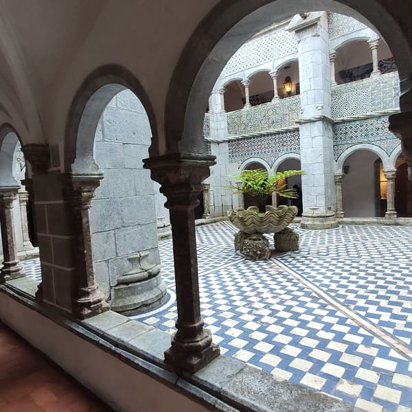
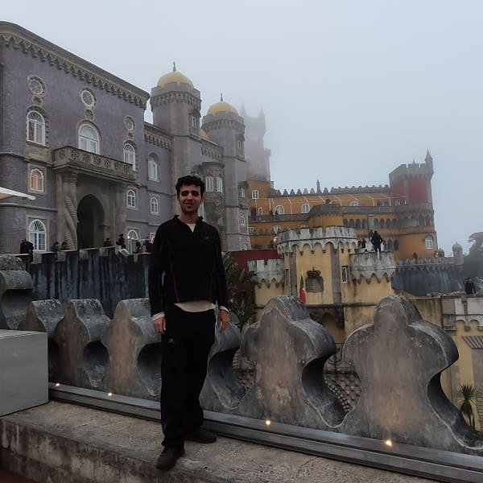
In this image the façade of the main building seen from the outside and one of the last restored rooms with the central column keeping the aesthetics of plaster and drywall details.
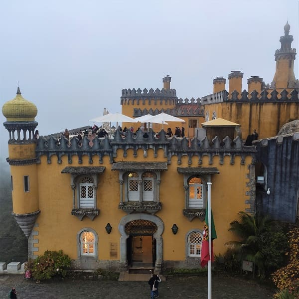
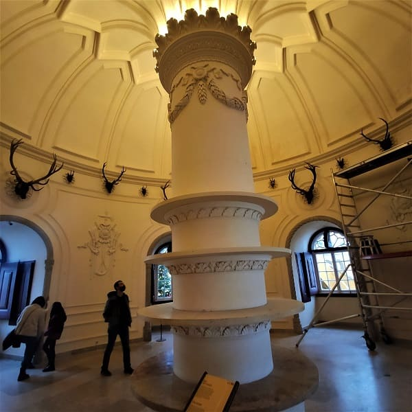
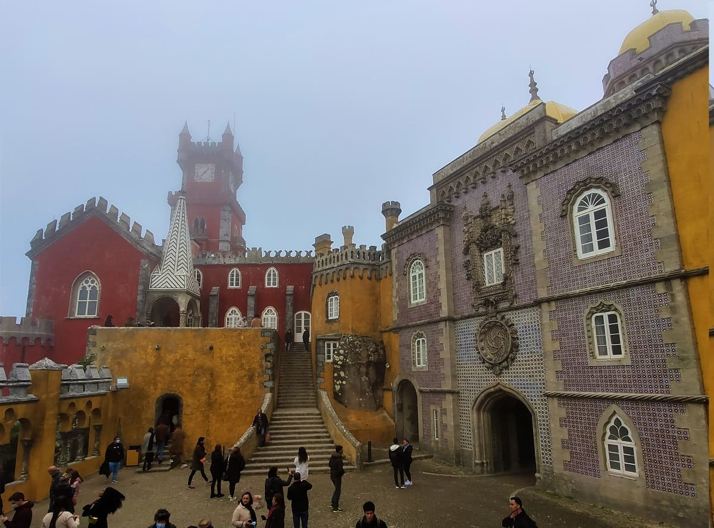
Finally, I would return to my hostel in the Caparica neighborhood.
National Palace s.XVIII.
8
Finally, I would return to my hostel in the Caparica neighborhood.
9
Sintra National Palace, s.XVI and Pena Palace, s.XIX.
10
Day 6, from Lisbon to Tomar (CLICK to continue)
December 7, 2021

![[Valid RSS]](https://www.onepointsync.com/wp-content/uploads/2016/08/valid-rss-rogers.png "Validate my RSS feed")